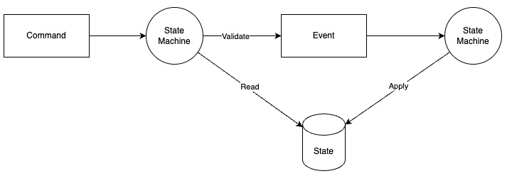
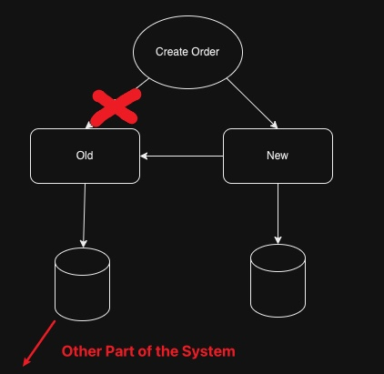
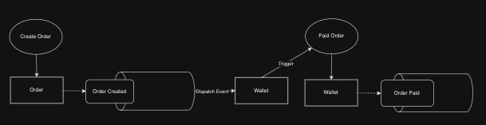
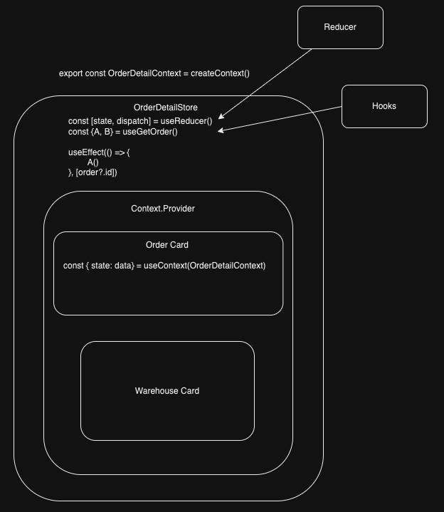
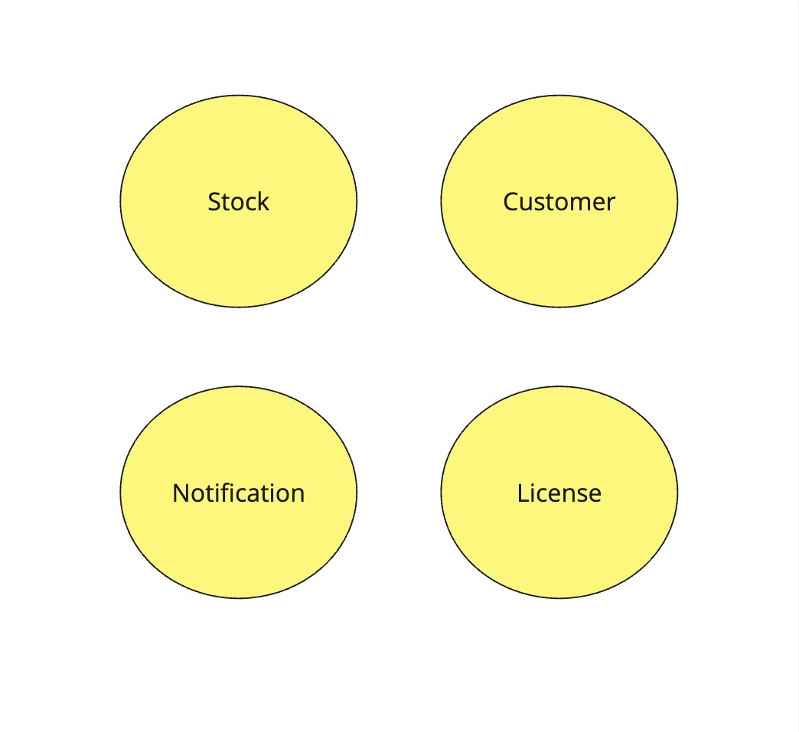
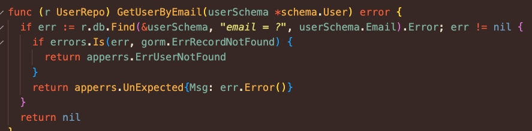

class: center, middle # Daniel Lin's Portfolio --- ###### Skills ### Planning <br/> #### From Seneca - System Design - Database Design - Testing Project #### From Portfolios - Lazy-Stock-Screener (DDD) --- ###### Skills ### Front End<br/> Feature + Tech #### From Work Experience - (@Blue) Website as product (JS+CSS) - (@PG) eCommence website for music technology company (JS+SASS) - (@Pickupp) Admin Order detail page (React hooks) - (@Pickupp) Feature toggle library (React hooks) - (@Pickupp) Websocket serice (React hooks) #### From Portfolios - Price Dashboard (React+Redux+SASS) - Lazy-Stock-Screener (React+Jotai) --- ###### Skills ### Back End<br/> Feature + Tech + Performance tuning #### From Work Experience - Feature Toggle Library (Node.js+Golang) - gRPC Cache Library (Node.js) - Websocket serice (Node.js) - Log library with asynLocalStorage (Node.js) - Migrate to new Order system (Node.js+Golang) - Performance tuning with SQL plan (PostgreSQL) #### From Portfolios - Lazy-Stock-Screener (GoLang+MongoDriver&Gorm) - Price Dashboard (Node.js+Mongoose) - Revised Email Sender (Node.js+Mongoose) --- ###### Skills ### Data<br/> Leverage ETL process #### Portfolios - SEC Data Pipeline (Pandas+Python) - Lazy-Stock-Screener (Pandas+Python) --- ###### Work Experience @Pickupp ### Summary<br/> Filled with fulfilling experiences in 2 years <img style="width:100%;" src="./statics/img/Pickupp/PR.jpg" alt="db_load"> --- ###### Work Experience @Pickupp ### Tech Part: Feature Toggle Lib. <br/> ##### Websocket Service + Feature Toggle: - Service Dispatchs Event (Node.js/Golang) <br/> - -> Message Queue (Nats) <br/> - -> Websocket Service (Node.js) <br/> - -> Push to Front-End (React) --- ###### Work Experience @Pickupp ### Tech Part: Log Lib. Leverage AsyncLocalStorage to create a independent context for a series of asynchronous operations in native way. <div style="text-align:center;"> <img style="width:80%;" src="./statics/img/Pickupp/logLib.jpg" alt="log_lib"> </div> --- ###### Work Experience @Pickupp ### New Order Service - Latest Event as Order Status - Many Join among Tables - Index Missing Hit - Performance or SSOT - System Migration - Event sequence - Fault Tolerance This is everything I’ve done at Pickupp, but after returning to school and studying more about system design, I believe my initial approach can be improved as an optimal approach if there is one. --- ###### Work Experience @Pickupp ### New Order Service: Latest Event as Order Status #### Initial Approach: Latest Event <div style="text-align:center;"> <img style="width:60%;" src="./statics/img/Pickupp/orderStatusTimeline.jpg" alt="timeline"> </div> #### Optimal Approach: Apply Event to Single State  <div style="text-align:center;"> <img style="width:60%;" src="./statics/img/Pickupp/orderStatusInOrder.jpg" alt="event_sourcing"> </div> --- ###### Work Experience @Pickupp ### New Order Service: Key Value Pairs in RDB #### Initial Approach: Key-Value in SQL <div style="text-align:center;"> <img style="width:50%;" src="./statics/img/Pickupp/keyValuePair.jpg" alt="key_value_pair"> </div> #### Pain points: - Lack of referential integrity constraints - Lack of advantages in structured queries - Challenges in maintenance and scalability - Application logic may need to be updated if new attributes added or changed - Difficulty in reporting and analysis - Data redundancy and inconsistency - Find item from array instead of key in object --- ###### Work Experience @Pickupp ### New Order Service: Index Missing Hit <br> Fix SQL queries without proper indexing <img style="width:100%;" src="./statics/img/Pickupp/dbLoad.png" alt="db_load"> --- ###### Work Experience @Pickupp ### New Order Service: Performance or Single Source of Truth<br/> Choice between Performance or Single Source of Truth is always hard. <div style="text-align:center;"> <img style="width:50%;" src="./statics/img/Pickupp/SSOT.jpg" alt="ssot"> </div> --- ###### Work Experience @Pickupp ### New Order Service: System Migration<br/> Build a transformation layer between new and old system <div style="text-align:center;">  </div> --- ###### Work Experience @Pickupp ### New Order Service: Event Sourcing #### Initial Approach: <div style="text-align:center;">  </div> #### Optimal Approach: Distributed Transaction - TC/C or Saga - Rollback - Parallel or Linear Execution (Depends) - Fault Tolerance - Raft Node Group --- ###### Work Experience @Pickupp ### Build Order Detail Page<br/> Native Reducer + useContext/useState Hooks <div style="text-align:center;">  </div> --- ###### Work Experience @Pickupp ### Fat Controller<br/> #### Initial Approach: - gRPC call - ORM call - business logic - service call #### Optimal Approach: - Clean Architecture --- ###### Work Experience @PG ### Layout work <p>Build a brand new website for Positive Grid by a ecommerce solution called Bigcommerce that mainly focus on front-end.</p> ##### Header: <div style="display:inline-block;"> <video autoplay muted preload="auto" style="width:68%;"> <source type="video/mp4" src="./statics/img/PG/header.mp4"> </video> <video autoplay muted preload="auto" style="width:28%;"> <source type="video/mp4" src="./statics/img/PG/header-mobile.mp4"> </video> </div> --- ###### Work Experience @PG ### Layout work ##### Demo Page: <div style="display:inline-block;"> <video autoplay muted preload="auto" style="width:78%;"> <source type="video/mp4" src="./statics/img/PG/demo-resize.mp4"> </video> <img style="width:78%;" src="./statics/img/PG/demo-fullpage.png" alt="demo-fullpage"> <img style="width:20%;vertical-align: top;" src="./statics/img/PG/demo-mobile.png" alt="demo-mobile"> </div> --- ###### Work Experience @PG ### Layout work ##### Login Page: <img style="width:100%;" src="./statics/img/PG/login.png" alt="login"> --- ###### Work Experience @PG ### Layout work ##### Find A Store / Store Page / Cart Mobile: <div style="display:inline-block;"> <img style="width:30%;" src="./statics/img/PG/find-store.png" alt="find-store"> <img style="width:33%;vertical-align: top;" src="./statics/img/PG/store1.jpg" alt="store1"> <div style="width:33%;vertical-align: top;display: inline-block;"> <!-- <img style="width:100%;" src="./statics/img/PG/cart.png" alt="cart"> --> <img style="width:100%;" src="./statics/img/PG/cart-mobile.png" alt="cart-mobile"> </div> </div> --- ###### Work Experience @PG ### Git Flow ##### Situation: <p style="font-size:1rem;margin-bottom:0;"> - Single feature should have their own developing branch. </p> <p style="font-size:1rem;margin-bottom:0;"> - Some features had been developed but not going live soon until the idea has been approved by marketing team member. </p> <p style="font-size:1rem;margin-bottom:0;"> - Website needs to be updated and deployed as fast as possible. </p> <img src="./statics/img/PG/customized-git-workflow.jpg" alt="git-flow"> --- ###### Work Experience @PG ### Git Flow ##### Idea: <p style="margin-bottom:0;"> - First step is always checkouting a new branch from master. </p> <p style="margin-bottom:0;"> - Run `git rebase prod-branch` before merging feature branch into stage branch or prod. branch. </p> <p style="margin-bottom:0;"> - Don't directly merge stage branch into prod. branch. </p> <p style="margin-bottom:0;"> - You can treat stage branch as a pre-prod. branch, but one thing you should be noticed that not all features which has been merged into stage are becoming part of our official release. </p> <img src="./statics/img/PG/customized-git-workflow.jpg" alt="git-flow"> --- ###### Work Experience @PG ### Bridged Page between APP and website: <p> In order to increase purchase, we had to find a way that our customers can access our web store easily inside app. </p> <video autoplay muted preload="auto" style="width:100%;"> <source type="video/mp4" src="./statics/img/PG/crm.mp4"> </video> --- ###### Work Experience @PG ### Product Card: <p> A code which is written in sub-pub pattern to match a maximum height value of individual product item in the same row. </p> <div style="display:inline-block;text-align: center;"> <img style="width:65%;" src="./statics/img/PG/product-card-old.png" alt="product-card-old"> <img style="width:65%;vertical-align: top;" src="./statics/img/PG/product-card.png" alt="product-card"> </div> --- ###### Work Experience @PG ### Promotion Bar ##### Dynamic render: <p>A marketing member can access BC's backstage and just edit some imperative texts and click save, then the promotion bar will be up-to-date without additional deployment. This is not an original feature in BC.</p> <div> <img style="width:100%;" src="./statics/img/PG/promotion-bar.png" alt="promotion-bar"> </div> --- ###### Work Experience @PG ### Price Dashboard <p>Marketing team needs a tool that can quickly read, set and update company's product price during every promotion era.</p> ##### Sketch this project: <div> <img style="width:100%;" src="./statics/img/PG/price-dashboard-mockup.png" alt="price-dashboard-mockup"> </div> --- ###### Price Dashboard [[source]](https://github.com/DanielLin9406/fullstack-priceDashboard) #### UI: Part 1 <p>By the way, I also do the design job since it was an internal tool.</p> <div> <img style="width:100%;" src="./statics/img/Price-Dashboard/price-dashboard-preview-1.png" alt="price-dashboard-preview-1"> </div> --- ###### Price Dashboard [[source]](https://github.com/DanielLin9406/fullstack-priceDashboard) #### UI: Part 2 <div> <img style="width:100%;" src="./statics/img/Price-Dashboard/price-dashboard-preview-2.png" alt="price-dashboard-preview-2"> </div> --- ###### Price Dashboard [[source]](https://github.com/DanielLin9406/fullstack-priceDashboard) ### Features: <p style="margin-bottom:0;margin-bottom:0.2rem;"> - The state is always up-to-date with backend even when create/update/delete operation has been triggered. </p> <p style="margin-bottom:0;margin-bottom:0.2rem;"> - Allow user to auto sign in if browser has been permitted to store his/her password. </p> <p style="margin-bottom:0;margin-bottom:0.2rem;"> - Power visual for understanding which promotion is on live and what is next promotion. </p> <p style="margin-bottom:0;"> - You can easily calculate a product price for a user who could has any combination of company's early product before. </p> --- ###### Price Dashboard [[source]](https://github.com/DanielLin9406/fullstack-priceDashboard) #### Demo: Auto sign in: <video autoplay muted preload="auto" style="width:100%;"> <source type="video/mp4" src="./statics/img/Price-Dashboard/auto-sign-in.mp4"> </video> --- ###### Price Dashboard [[source]](https://github.com/DanielLin9406/fullstack-priceDashboard) #### Demo: Create a promotion: <video autoplay loop muted preload="auto" style="width:100%;"> <source type="video/mp4" src="./statics/img/Price-Dashboard/create-promotion.mp4"> </video> --- ###### Price Dashboard [[source]](https://github.com/DanielLin9406/fullstack-priceDashboard) #### Demo: Update a promotion: <video autoplay loop muted preload="auto" style="width:100%;"> <source type="video/mp4" src="./statics/img/Price-Dashboard/update-promotion.mp4"> </video> --- ###### Price Dashboard [[source]](https://github.com/DanielLin9406/fullstack-priceDashboard) #### Demo: Remove a promotion: <video autoplay loop muted preload="auto" style="width:100%;"> <source type="video/mp4" src="./statics/img/Price-Dashboard/remove-promotion.mp4"> </video> --- ###### Price Dashboard [[source]](https://github.com/DanielLin9406/fullstack-priceDashboard) #### Demo: Create a promotion and push it on live: <video autoplay loop muted preload="auto" style="width:100%;"> <source type="video/mp4" src="./statics/img/Price-Dashboard/create-promotion-go-live.mp4"> </video> --- ###### Price Dashboard [[source]](https://github.com/DanielLin9406/fullstack-priceDashboard) #### Demo: Create a promotion and push it on live while there is another promotion on live: <video autoplay loop muted preload="auto" style="width:100%;"> <source type="video/mp4" src="./statics/img/Price-Dashboard/create-promotion-go-live-replace.mp4"> </video> --- ###### Price Dashboard [[source]](https://github.com/DanielLin9406/fullstack-priceDashboard) #### Demo: Price updated when different products in bundles: <video autoplay loop muted preload="auto" style="width:100%;"> <source type="video/mp4" src="./statics/img/Price-Dashboard/price-update-in-bundle.mp4"> </video> --- ###### Price Dashboard [[source]](https://github.com/DanielLin9406/fullstack-priceDashboard) #### Tech: Front End (Web service): - Structure: <p style="margin-top:0;margin-bottom:0.2rem;"> - Take advantage of the power of Webpack for packaging web service in dev and prod. environment instead of directly using CRA. </p> <p style="margin-top:0;margin-bottom:0.2rem;"> - React-Redux best practice (e.g. layout, route and page as component for more flexibility.) </p> <p style="margin-top:0;"> - Separate Redux's mapStateToProps and mapDispatchToProps from every component in order to make it easy to understand. </p> - Design pattern: <p style="margin-top:0;margin-bottom:0.2rem;"> - Implement React's design pattern such as compound, render-props and context api to build reuseable and clear component. </p> <p style="margin-top:0;"> - Use module pattern for Redux. </p> - API: <p style="margin-top:0;margin-bottom:0.2rem;"> - Auto sign in with Credential Management API. </p> <p style="margin-top:0;"> - Encapsulate axios </p> - Server: <p style="margin-top:0;margin-bottom:0.2rem;"> - Use nginx as static file server in production environment. </p> <p style="margin-top:0;"> - JSON-server for serving a mock data. </p> --- ###### Price Dashboard [[source]](https://github.com/DanielLin9406/fullstack-priceDashboard) #### Tech: Back End (User / Promotions / Prices / Upgrade-rules Services): - Auth: <p style="margin-top:0;"> - Google OAuth 2.0 </p> - Structure: <p style="margin-top:0;margin-bottom:0.2rem;"> - Best practice of Node/Express with ES6 syntax(e.g. self-contained components as file structure, bind API at router level). </p> <p style="margin-top:0;"> - Every route has implemented Redis as cache server to reduce DB's query operation. </p> - Cache: <p style="margin-top:0;"> - Thanks to Redis, no extra DB query command is executed when post/update/delete router has been called and still can return a full list of promotion. </p> - Proxy: <p style="margin-top:0;"> - Use NGINX as a reverse proxy. </p> --- ###### Price Dashboard [[source]](https://github.com/DanielLin9406/fullstack-priceDashboard) #### Tech: DevOps - Container <p style="margin-top:0;margin-bottom:0.2rem;"> - Use Docker-compose to run dev on local </p> <p style="margin-top:0;margin-bottom:0.2rem;"> - Multi-container structure </p> <p style="margin-top:0;margin-bottom:0.2rem;"> - Use $(git rev-parse HEAD) to tag container in order to track version. </p> <p style="margin-top:0;"> - K8S </p> - CI: <p style="margin-top:0;"> - Travis </p> - Cloud: <p style="margin-top:0;margin-bottom:0.2rem;"> - AWS ECS </p> <p style="margin-top:0;"> - GCP GKE </p> --- ###### Price Dashboard [[source]](https://github.com/DanielLin9406/fullstack-priceDashboard) ### Developing Process #### Step 1: Business Requirement <br/> --- ###### Price Dashboard [[source]](https://github.com/DanielLin9406/fullstack-priceDashboard) ### Developing Process #### Step 2: Build UI - Present at least twice your sketch and features to team leader in order to prevent misunderstandings: <div> <img style="width:80%;" src="./statics/img/PG/price-dashboard-mockup.png" alt="price-dashboard-mockup"> </div> --- ###### Price Dashboard [[source]](https://github.com/DanielLin9406/fullstack-priceDashboard) ### Developing Process #### Step 2: Build Data Structure: - According to sketch, build a redux data structure <div> <img style="width:50%;vertical-align: top;" src="./statics/img/Price-Dashboard/redux-structure-2.png" alt="redux-structure-2"> <img style="width:30%;vertical-align: top;" src="./statics/img/Price-Dashboard/redux-structure-1.png" alt="redux-structure-1"> </div> --- ###### Price Dashboard [[source]](https://github.com/DanielLin9406/fullstack-priceDashboard) ### Developing Process #### Step 2: Planning Sequence Diagrams <p style="font-size: 1rem;"> - Check existing API and define new API spec. </p> <p style="font-size: 1rem;"> - Define a API response's data structure. </p> <p style="font-size: 1rem;"> - Deal with Authorization. </p> <div> <img style="width:80%;" src="./statics/img/Price-Dashboard/sequence-diagram.png" alt="sequence-diagram"> </div> --- ###### Price Dashboard [[source]](https://github.com/DanielLin9406/fullstack-priceDashboard) ### Developing Process #### Step 3: Implement entry point: - Back-end API <p style="margin-top:0;margin-bottom:0.2rem;"> -> database </p> <p style="margin-top:0;margin-bottom:0.2rem;"> -> front-end </p> <br /> - Front-end with mock data server --- ###### Price Dashboard [[source]](https://github.com/DanielLin9406/fullstack-priceDashboard) ### Developing Process #### Step 3: Develop back end API: Although complexity of individual API may be different from case to case, I take an API as unit. <p style="margin-top:0;margin-bottom:0.2rem;"> - Build API router based on sequence diagram (Write schema and resolve to create graphql-server) </p> <p style="margin-top:0"> - Build a mock data and return response. </p> <p style="margin-top:0"> - Integrate 3rd API if needed. </p> --- ###### Price Dashboard [[source]](https://github.com/DanielLin9406/fullstack-priceDashboard) ### Developing Process #### Step 3: Connect backEnd API to DB: <p> - Setup DB </p> <p style="margin-top:0"> - Connect to dev/prod DB </p> <p style="margin-top:0"> - Build model classes </p> <p style="margin-top:0"> - Write seed data into DB </p> <p style="margin-top:0"> - Access data @API level and replace mock data </p> <p style="margin-top:0"> - Run unit test to api </p> --- ###### Price Dashboard [[source]](https://github.com/DanielLin9406/fullstack-priceDashboard) ### Developing Process #### Step 3: Develop front end data model <p> - Build Webpack </p> <p style="margin-top:0"> - Build Redux Store to host state </p> <p style="margin-top:0"> - Build Reducer and Set initial state </p> <p style="margin-top:0"> - Build Action and connect to backend API(or Mock data) </p> <p style="margin-top:0"> - Display data in component </p> --- ###### Price Dashboard [[source]](https://github.com/DanielLin9406/fullstack-priceDashboard) ### Developing Process #### Step 3: Develop front end UI from the bottom up <p> - Build unit component Button, Progress </p> <p style="margin-top:0"> - Define Props Parameter </p> <p style="margin-top:0"> - Decide where to call redux dispatch function </p> <p style="margin-top:0"> - Based on design pattern to write component </p> <p style="margin-top:0"> - Build a functional component </p> <p style="margin-top:0"> - Start to build state inside component </p> <p style="margin-top:0"> - Run unit test </p> --- ###### Price Dashboard [[source]](https://github.com/DanielLin9406/fullstack-priceDashboard) ### Developing Process #### Step 3: Dockerize your application <p> - Build dockerfile in dev and prod </p> <p style="margin-top:0"> - Build docker-compose in dev and prod </p> --- ###### Price Dashboard [[source]](https://github.com/DanielLin9406/fullstack-priceDashboard) ### Developing Process #### Step 4: Functional Test Phase <p> - E.g. test login, test post article </p> --- ###### Price Dashboard [[source]](https://github.com/DanielLin9406/fullstack-priceDashboard) ### Developing Process #### Step 5: Deployment Phase <p> - Set up CI tools </p> <p> - Run Integration Test </p> --- ###### Financial Data Pipeline [[source]](https://github.com/DanielLin9406/worker-financialReportScreenr/tree/master/companyScreener) ### Company Screener - Input are three financial report files exported from morningstar and location is under ~/FinancialData/{ticker} - output is custom report on Google Excel. <div> <img style="width:100%;" src="./statics/img/RPipelines/report.png" alt="financial-report-dump"> </div> --- ###### Financial Data Pipeline [[source]](https://github.com/DanielLin9406/worker-financialReportScreenr/tree/master/secFinancialReportScraper) ### SEC Financial Report Scraper - Input is a ticker, date of that stock. - Output is custom report on Google Excel. <div> <img style="width:100%;" src="./statics/img/RPipelines/indicator.png" alt="financial-indicator-dump"> </div> --- ###### Lazy Stock Screener [[source]](https://github.com/lazy-stock-screener-demo) ### Introduction - DDD: Domain-Driven Design - Clean Architecture ### Purpose - A practice pertaining to the goal of implementing concrete domain models and translating business logic into efficient technical solutions. --- ###### Lazy Stock Screener [[source]](https://github.com/lazy-stock-screener-demo) ### System Context Diagram <div> <img style="width:100%;" src="./statics/img/Lazy-Stock-Screener/System Context Diagram.jpg" alt="system_context_diagram"> </div> --- ###### Lazy Stock Screener [[source]](https://github.com/lazy-stock-screener-demo) ### Strategic Design: How to Proceed? #### Start from Big Ball of Mud - Big Ball of Mud -> Domain Model #### Start from Domain Model - Domain Model -> Big Ball of Mud --- ###### Lazy Stock Screener [[source]](https://github.com/lazy-stock-screener-demo) ### Strategic Design: Domain Model <div style="display:inline-block;text-align: center;">  <img style="width:48%;" src="./statics/img/Lazy-Stock-Screener/Domain Models.jpg" alt="domain_model"> </div> --- ###### Lazy Stock Screener [[source]](https://github.com/lazy-stock-screener-demo) ### UI Design <div> <img style="width:100%;" src="./statics/img/Lazy-Stock-Screener/UI Design.jpg" alt="ui-design"> </div> --- ###### Lazy Stock Screener [[source]](https://github.com/lazy-stock-screener-demo) ### Strategic Design: Big Ball of Mud <div> <img style="width:100%;" src="./statics/img/Lazy-Stock-Screener/Big Ball of Mud.jpg" alt="big_ball_of_mud"> </div> --- ###### Lazy Stock Screener [[source]](https://github.com/lazy-stock-screener-demo) ### Strategic Design: Bounded Contexts <div> <img style="width:100%;" src="./statics/img/Lazy-Stock-Screener/Bounded Contexts.jpg" alt="bounded_contexts"> </div> --- ###### Lazy Stock Screener [[source]](https://github.com/lazy-stock-screener-demo) ### Strategic Design: Context Mapping <div> <img style="width:100%;" src="./statics/img/Lazy-Stock-Screener/Context Mapping.jpg" alt="context_mapping"> </div> --- ###### Lazy Stock Screener [[source]](https://github.com/lazy-stock-screener-demo) ### Strategic Design: Ubiquitous Language #### Stock - Metric - Symbol #### Customer - Role - Identity --- ###### Lazy Stock Screener [[source]](https://github.com/lazy-stock-screener-demo) ### Strategic Design: User Story + Use Case <div> <img style="width:100%;" src="./statics/img/Lazy-Stock-Screener/user story+use cases.jpg" alt="user_story_use_cases"> </div> --- ###### Lazy Stock Screener [[source]](https://github.com/lazy-stock-screener-demo) ### Strategic Design: Domain Events<br/> Dispatching events through messaging mechanism <div style="text-align: center;"> <img style="width:70%;" src="./statics/img/Lazy-Stock-Screener/Domain Events.jpg" alt="domain_events"> </div> --- ###### Lazy Stock Screener [[source]](https://github.com/lazy-stock-screener-demo) ### Tactical Design: Layered Architecture <div style="text-align: center;"> <img style="width:20%;" src="./statics/img/Lazy-Stock-Screener/Layered Arch.jpg" alt="layered_arch"> </div> --- ###### Lazy Stock Screener [[source]](https://github.com/lazy-stock-screener-demo) ### Tactical Design: Clean Architecture <div style="display:inline-block;text-align: center;"> <img style="width:80%;" src="./statics/img/Lazy-Stock-Screener/Clean Architecture.jpg" alt="clean_architecture"> <img style="width:80%;" src="./statics/img/Lazy-Stock-Screener/Clean Architecture Code.jpg" alt="clean_architecture_code"> </div> --- ###### Lazy Stock Screener [[source]](https://github.com/lazy-stock-screener-demo) ### Tactical Design: Repositories <div style="text-align: center;">  </div> --- ###### Lazy Stock Screener [[source]](https://github.com/lazy-stock-screener-demo) #### Early Demo: Login Form - Without Material UI here <div style="display:inline-block; text-align: center;"> <video autoplay loop muted preload="auto" style="width:100%;"> <source type="video/mp4" src="./statics/img/Lazy-Stock-Screener/Login.mp4"> Your browser does not support the video tag. </video> </div> --- ###### Lazy Stock Screener [[source]](https://github.com/lazy-stock-screener-demo) #### Early Demo: Access Dashboard with Google Auth <div style="display:inline-block; text-align: center;"> <video autoplay loop muted preload="auto" style="width:100%;"> <source type="video/mp4" src="./statics/img/Lazy-Stock-Screener/Google.mp4"> Your browser does not support the video tag. </video> </div> --- ###### Lazy Stock Screener [[source]](https://github.com/lazy-stock-screener-demo) #### Early Demo: Auto Complete <video autoplay loop muted preload="auto" style="width:100%;"> <source type="video/mp4" src="./statics/img/Lazy-Stock-Screener/autocomplete.mp4"> Your browser does not support the video tag. </video> --- ###### Revised Email Sender [[source]](https://github.com/DanielLin9406/fullstack-emailSender-upgraded) ### First full stack attempts [Email Sender by Stepher Grinder](https://github.com/StephenGrider/FullstackReactCode) <div> <img style="width:100%;" src="./statics/img/Email-Sender/preview.png" alt="email-sender-preview"> </div> --- ###### Revised Email Sender [[source]](https://github.com/DanielLin9406/fullstack-emailSender-upgraded) ### Refractor Front End<br/> | | Original | Revised | |-----------------------------|------------------:|--------------------:| | Scaffold | Create React APP | My own Webpack | | Redux pattern | Reducer Pattern | Module Pattern | | New React feature | X | Hooks | | Websocket | X | socket.io | | Webpack dev/prod | X | yes | | Sign out | Page Reload | Ajax | | Dev. server | webpack-dev-server | webpack-dev-server | | Static file server in prod. | X | Express | --- ###### Revised Email Sender [[source]](https://github.com/DanielLin9406/fullstack-emailSender-upgraded) ### Refractor Back End<br/> | | Original | Revised | |-----------------------------|--------------------|--------------------| | Node syntax | Common.js | import | | Separate ‘server’ and ‘app’ module | X | yes | | Router attaching level | App level | Router level | | Structure | Technical role | Self-contained components | | Graphql server | X | Both apollo-server and graphqlExpress | | Mocha + Chi Testing | Restful API | GraphQL API | | Websocket | X | socket.io | | API + Connection type | Restful | Restful+Graphql+Websocket | --- ###### Revised Email Sender [[source]](https://github.com/DanielLin9406/fullstack-emailSender-upgraded) ### DevOps and CI <br/> | | Original | Revised | |----------------------|--------------------|--------------------| | Container | X | Docker, docker-compose | | CI/CD | heroku | travis | | Nginx | X | As reverse-proxy | --- ###### Personal Website [[source]](https://github.com/DanielLin9406/frontend-mixDanStudio) ### Introduction<br/> #### With modern packing tool, webpack. <div> <img style="width: 100%;" src="./statics/img/Persional-Website/preview.jpg" alt="preview of my personal website"> </div> --- ###### Personal Website [[source]](https://github.com/DanielLin9406/frontend-mixDanStudio) ### Front-End<br/> ##### Multi pug template<br/> <img style="width:100%;" src="./statics/img/Persional-Website/multi-pug.png" alt="multi-pug-template"> --- ###### Personal Website [[source]](https://github.com/DanielLin9406/frontend-mixDanStudio) ### Front-End<br/> ##### Dynamic import <img style="width:100%;" src="./statics/img/Persional-Website/webpack-dynamic-import.png" alt="webpack-dynamic-import"> --- ###### Personal Website [[source]](https://github.com/DanielLin9406/frontend-mixDanStudio) ### Front-End<br/> ##### Webpack plugin: <div style="text-align: center;"> <img style="width:70%;" src="./statics/img/Persional-Website/webpack-plugin.png" alt="webpack-plugin"> </div> --- ###### Personal Website [[source]](https://github.com/DanielLin9406/frontend-mixDanStudio) ### Front-End<br/> <span style="font-size:1rem;">Please ignore a awful color which is way much deviated from the original one.</span> ##### Layout and animations <video autoplay muted preload="auto" style="width:100%;"> <source type="video/mp4" src="./statics/img/Persional-Website/layout-animations.mp4"> Your browser does not support the video tag. </video> --- ###### Personal Website [[source]](https://github.com/DanielLin9406/frontend-mixDanStudio) ### Back-End<br/> Use API keys and OAuth2.0 to authorized user. ##### Google Sheet API <video autoplay muted preload="auto" style="width:100%;"> <source type="video/mp4" src="./statics/img/Persional-Website/google-spread-sheet-api.mp4"> Your browser does not support the video tag. </video> --- ###### Crawler [[source]](https://github.com/DanielLin9406/crawler-python-voicetube) ### Introduction A simple python crawler transfer a given HTML file into a .csv file. ##### From web html -> Excel: <div> <img style="width:48%;vertical-align: middle;" src="./statics/img/Crawler/from.png" alt="from.png"> <img style="width:48%;vertical-align: middle;" src="./statics/img/Crawler/Dist.png" alt="Dist.png"> </div> <br/> ##### Tech Details: <p style="margin-top:0;;margin-bottom:0.2rem;"> - Python 3 </p> <p style="margin-top:0;;margin-bottom:0.2rem;"> - Requests </p> <p style="margin-top:0;;margin-bottom:0.2rem;"> - BS4 </p> <p style="margin-top:0;"> - csv </p> --- ###### Crawler [[source]](https://github.com/DanielLin9406/crawler-python-voicetube) ### Refractor python code to a well-organized structure: <div> <img style="width:48%;" src="./statics/img/Crawler/python-before.png" alt="python-before.png"> <img style="width:48%;vertical-align: top;" src="./statics/img/Crawler/python-after.png" alt="python-after.png"> </div> --- ###### <div style="display: flex;justify-content: center;align-items: center;height: 100%;"> <h2 style="text-align: center;">Thank you!!!!!!</h2> </div>